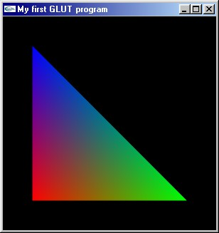

| Basics of GLUT | See Also: OpenGL:GLUT Library Sweet Snippets:All |
Basics of GLUT
In this tutorial I'll cover the basics of setting up and using OpenGL and GLUT with VC++. I'll take you through initializing your GLUT display, opening a window and displaying a triangle in it. The program you'll learn how to create is a foundation for more complex GLUT projects you might want to undertake in the future.
GLUT stands for OpenGL Utility Toolkit. It's an API for OpenGL written by Mark Kilgard. GLUT is very easy to set up and use compared to traditional Win32 OpenGL, making it great for beginners. Because GLUT handles input and window setup, GLUT code is not platform specific, meaning any application you write will run on just about any platform (until you start adding DirectSound code, that is...).
Some preliminary links:
Mark Kilgard's GLUT page
The GLUT FAQ
The online GLUT 3 specification
You can download the latest version of glut from here.
Once you've downloaded and unzipped the file, copy glut32.dll to your windows\system directory, glut32.lib to your compiler's lib directory and glut.h to your complier's include\gl directory. Now you're ready to roll.
Start up VC++, then create an empty console application.
Link to glut32.lib, glu32.lib and opengl32.lib in project > settings
This code includes headers for the libraries we'll be using and declares our functions.
#include <windows.h> //header file for windows #include <gl\gl.h> //header file for openGL #include <gl\glu.h> //header file for the openGL utility library #include <gl\glut.h> //header file for GLUT static void redraw(void); //declarations int main(int argc, char **argv);
The argc variable contains the number of arguments passed to our program, while argv is a pointer to the arguments. We don't need to worry about them particularly, except to pass them to glutInit() so it can process any command line parameters sent to GLUT. The glutInit() function initialises the GLUT framework.
The glutInitDisplayMode function is used to set up the display mode. We'll call it with the following flags:
The glutCreateWindow() function creates the window we're going to be drawing in. glutDisplayFunc() specifies the function we'll use to draw the display, which we'll have to write later. GLUT will call this function whenever the display needs updating.
int main(int argc, char **argv)
{
glutInit(&argc,argv); //initializes the GLUT framework glutInitDisplayMode(GLUT_RGB | GLUT_DOUBLE | GLUT_DEPTH); //sets up the display mode glutCreateWindow("My first GLUT program"); //creates a window glutDisplayFunc(redraw); //specifies our redraw function
Next we need to set up the projection matrix. The projection matrix is a 4x4 matrix which is used to translate points from their positions relative to the camera to their positions on the screen. We use it to specify how our scene will be projected. In order to change it we need to call glMatrixMode() with GL_PROJECTION. The gluPerspective() function creates a projection matrix with a perspective transform for us. All we need do is specify the view angle, aspect ratio and the postitions of the near and far clipping planes.
glMatrixMode(GL_PROJECTION); //changes the current matrix to the projection matrix //sets up the projection matrix for a perspective transform gluPerspective(45, //view angle 1.0, //aspect ratio 10.0, //near clip 200.0); //far clip
When we're done we switch the current matrix to the modelview matrix. The modelview matrix is a 4x4 matrix used to transform points from their actual positions (in world space) into their positions relative to the camera. It's the matrix we use to specify our camera postion and the position of anything we draw. The glutMainLoop() function is the main loop of the GLUT framework and we need to call it next.
glMatrixMode(GL_MODELVIEW); //changes the current matrix to the modelview matrix glutMainLoop(); //the main loop of the GLUT framework return 0; }
Next we need to create our redraw() function which will draw our triangle. glClear() called with GL_COLOR_BUFFER_BIT and GL_DEPTH_BUFFER_BIT will clear the colour and depth buffers in our window. We need to do this before we start drawing on it.
static void redraw(void) //all drawing code goes here { glClear(GL_COLOR_BUFFER_BIT | GL_DEPTH_BUFFER_BIT); //clears the colour and depth buffers
Now we're almost ready to start drawing. First though we need to store our camera's position ((0,0,0) on the x, y and z axes - the center of our world) with glPushMatrix() and then move it 100 on the Z axis, effectively moving the camera backwards, enabling us to see what we're drawing. Because the modelview matrix specifies where we are drawing relative to the camera, to move the camera we need to translate the matrix by the reverse of the translation we want from the camera, so to move the camera (0,0,100) we translate the modelview matrix (0,0,-100). This has the same effect as moving our triangle (0,0,-100).
glPushMatrix(); //saves the current matrix on the top of the matrix stack glTranslatef(0,0,-100); //translates the current matrix 0 in x, 0 in y and -100 in z
Now we're going to draw the triangle. In order to do this, we need to call glBegin(GL_TRIANGLES), which tells OpenGL we're going to begin drawing triangles. OpenGL will then treat every group of three vertices as a triangle, and when glEnd() is called it will render the triangle(s) to our window.
Between the glBegin() and glEnd() we need to specify 3 vertices with glVertex3f. The three values specified in the each glVertex3f() call are the vertex's X, Y and Z coordinates in world space. We can also specify a colour for each of the vertices by using glColor3f() before each call to glVertex3f. The parameters we call glColor3f() with are the red, green and blue elements (from 0 to 1), which make up the colour. OpenGL will then blend the colours across the triangle.
glBegin(GL_TRIANGLES); //tells OpenGL that we're going to start drawing triangles glColor3f(1,0,0); //sets the current colour to red glVertex3f(-30,-30,0); //specifies the first vertex of our triangle glColor3f(0,1,0); //sets the current colour to green glVertex3f(30,-30,0); //specifies the second vertex of our triangle glColor3f(0,0,1); //sets the current colour to blue glVertex3f(-30,30,0); //specifies the third vertex of our triangle glEnd(); //tells OpenGL that we've finished drawing
Next we retrieve our saved matrix from the top of the matrix stack with glPopMatrix(), setting the camera's position back to (0,0,0), ready for the next frame. Because we're using double buffering, all drawing has been done on the back buffer (the invisible buffer). Now the frame is completed we call glutSwapBuffers() to swap the front buffer (the visible buffer) and back buffer over, making what we have drawn visible.
glPopMatrix(); //retrieves our saved matrix from the top of the matrix stack glutSwapBuffers(); //swaps the front and back buffers } //The end of our program!
That's it! The end of our program and this tutorial. Build the program and try it out.
Hopefully with the help of this tutorial you should now be able to build and initialize a GLUT program and draw triangles. If you want to give some feedback on this tutorial or have any questions, please email me.
This tutorial is Copyright © 2001 Ben Woodhouse
Discuss this article in the forums
Date this article was posted to GameDev.net: 1/29/2002
(Note that this date does not necessarily correspond to the date the article
was written)
© 1999-2002 Gamedev.net. All rights reserved. Terms of Use
Privacy Policy
Comments? Questions? Feedback? Send us an e-mail!